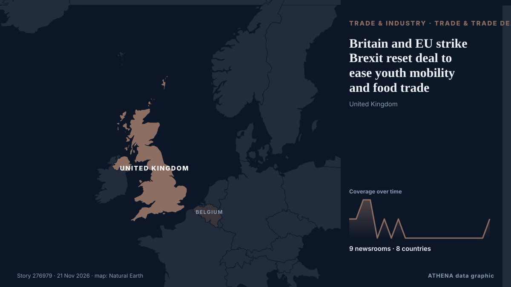

Εμπόριο, Βιομηχανία & Υποδομές
ΧορηγούμενοΠαρουσιάζεται από  Cybernetics and Artificial Intelligence Lab Welcome to the Cybernetics and Artificial Intelligence Laboratory, established at the Department of Business Administration of the National and Kapodistrian University of Athens. The lab is headed by Professor Dimitrios Thomakos. The lab aims to do research that can be published in top venues. Our research uses tools and methods of Artificial Intelligence, and lies in the following areas: - Forecasting - Decision making - Cyber security - Finance We are always looking forward to collaborating with exceptional students!
Cybernetics and Artificial Intelligence Lab Welcome to the Cybernetics and Artificial Intelligence Laboratory, established at the Department of Business Administration of the National and Kapodistrian University of Athens. The lab is headed by Professor Dimitrios Thomakos. The lab aims to do research that can be published in top venues. Our research uses tools and methods of Artificial Intelligence, and lies in the following areas: - Forecasting - Decision making - Cyber security - Finance We are always looking forward to collaborating with exceptional students!
Οι τίτλοι των ειδήσεων παρουσιάζονται στα αγγλικά, όπως δημοσιεύτηκαν.

Εμπόριο & εμπορικές συμφωνίεςBritain and EU strike Brexit reset deal to ease youth mobility and food trade
UK prime minister Andy Burnham said the deal marked a 'historic moment' in UK-EU relations, adding it was a 'win-win' for both sides. από The Olive Press
| 8 Νοε | 49 |
|---|---|
| 9 Νοε | 118 |
| 10 Νοε | 145 |
| 11 Νοε | 109 |
| 12 Νοε | 94 |
| 13 Νοε | 85 |
| 14 Νοε | 77 |
| 15 Νοε | 68 |
| 16 Νοε | 123 |
| 17 Νοε | 93 |
| 18 Νοε | 99 |
| 19 Νοε | 60 |
| 20 Νοε | 56 |
| 21 Νοε | 0 |
Canada seeks interim U.S. tariff deal by year-end, CBC reports
CBC News reported, citing sources familiar with Thursday’s meeting between Canada-U.S. από investingLive (ForexLive)
Yemen's Houthis threaten to strike Saudi Red Sea ports
Yemen’s Houthis threatened on Friday to attack Saudi Arabia’s Red Sea ports if Saudi-led coalition forces struck the strategic Red Sea port of Hodeidah. από Business Recorder
President of Azerbaijan Ilham Aliyev meets with Chairman of National Assembly of Vietnam in Hanoi
President of the Republic of Azerbaijan Ilham Aliyev met with Tran Thanh Man, Chairman of the National Assembly of the Socialist Republic of Vietnam, in Hanoi on November 20. από AzerNews
Iraq Prepares for Residents’ Return to Jurf al-Sakhar
spokesperson for the Office of the Commander-in-Chief of the Iraqi Armed Forces says a coordinated plan is being prepared to restore services, while the Faziliya Bridge road to Karbala is set to… από Kurdistan24 (English)
At least 8 killed, 23 hurt in Russian 'retaliatory' strikes on Ukraine
Russia unleashed a deadly barrage against Kyiv, Lviv and other cities and regions in "retaliation" for Ukraine putting its Crimean Bridge out of action. από UPI World News
Singapore maritime plan teased as PSA breaks ground on Tuas phase 2
A new master plan will be released next year, focusing on expanding capacity across the city-state's maritime ecosystem, harnessing technology and innovation, and investing in the workforce, the… από The Journal of Commerce (JOC)
Outages in US cause worry, despite official attempts to downplay concerns
Experts say Trump administration is not taking the threat of AI attacks seriously, as consumers stock up on supplies. από Al Jazeera English
Greek PM signals construction restrictions on Mykonos & Santorini
Prime Minister Kyriakos Mitsotakis on Thursday raised the possibility of imposing restrictions on new building development on islands such as Mykonos and Santorini in Greece’s new spatial planning… από Keep Talking Greece
‘Doomsday prepping’ spikes in US as tech outages drive shopper paranoia
Recent emergency preparedness campaigns across the world have contributed to the consumer anxiety. από The Straits Times
Judge orders US agriculture chief to stop sending religious emails from official account
A US judge ordered, Agriculture Secretary Brooke Rollins to stop sending religious emails to employees from her official account,. από MyJoyOnline
Ningbo-Zhoushan Port's container throughput for 2026 exceeds 40 million TEUs
The Port of Savannah handled 565,366 TEUs in October 2026, an increase of 25% compared with the same month last year, according to the Georgia Ports Authority (GPA). από Container News
S’porean charged with trafficking 19kg of cannabis at Ipoh airport
No plea was recorded from Chen Long in the Ipoh magistrates' court as the case falls under the High Court's jurisdiction. από Free Malaysia Today
Thailand seeks lower US tariffs on forced labour and excess capacity
Thailand is seeking to reduce additional US tariffs on Thai goods from 12.5% to 10% under measures related to forced labour, while pushing for the lowest possible tariffs under proposed US measures… από Khaosod English
Tajikistan–Afghanistan Border Market Proposed to Boost Trade
Tajikistan has proposed establishing a joint border market with Afghanistan. από The Times of Central Asia
President Zardari felicitates Oman’s Sultan on 56th National Day
Dubai: Sultan Haitham bin Tarik of Oman has granted a royal pardon to 344 prisoners to mark the Sultanate's 56th National Day, the Oman News Agency (ONA) reported on Thursday. από Gulf News
UK Moves Toward New Maritime Fuel Standard
The United Kingdom has launched a consultation on new maritime fuel regulations that could require thousands of ships calling at British ports to progressively reduce the greenhouse gas emissions… από gCaptain
Sallaum Logistics opens inland customs bonded compound in the Port of Limburg, Genk
The new site extends the Sallaum Terminal in Antwerp inland reachable by river, rail and road Sallaum Logistics is opening. από Cyprus Shipping News
Russia cannot dictate 'unrealistic security demands': UK premier
Andy Burnham says Europe ready to 'enter serious discussions on European security, but only if a peace agreement is reached between Ukraine and Russia' από Anadolu Agency (English)
A third Ukrainian strike in 4 days halts rail traffic on Russia's Kerch Bridge to Crimea
Ukraine has launched a third aerial attack in four days on the Kerch Bridge, a crucial link between Russia and Crimea. από ABC News (International)
Maersk and Hapag-Lloyd return three more Gemini services to Suez
Maersk and Hapag-Lloyd will return three additional Gemini Cooperation services to the Red Sea and Suez Canal route on a structural basis. από Container News
Egypt, Libya sign cooperation agreements after talks in Cairo
Deals cover energy, infrastructure, scientific research, labor, small businesses. από Anadolu Agency (English)
Early Polar Vortex Disruption Raises Fears of Colder European Winter
An unusually early weakening of the Arctic polar vortex could increase the likelihood of cold air moving south toward Europe, bringing potential cold spells and snowfall. από To Vima (English)
Ankara urges EU to include Turkish-built vehicles in ‘Made in EU’ incentives
Turkish Trade Minister Ömer Bolat urged the European Union on Thursday to make vehicles built in Turkey eligible for proposed government contracts and subsidies, warning that excluding them will hurt… από Turkish Minute
Trump tells Americans to ‘relax’ after spate of tech outages spark concern: ‘Everything’s good’
Trump’s remarks are the latest attempt by his administration to reassure the public after a series of chaotic disruptions. από The Independent
Steer Acquires Mercator International
Steer has completed the acquisition of Mercator International, a specialist ports, maritime and freight consultancy, as it continues to expand its international advisory business… από Maritime Professional
Ukraine launches another strike on Crimean Bridge
Ukraine reportedly launched a third strike on the Crimean Bridge this week, targeting its railway section after earlier attacks destroyed part of the road bridge. από Baltic News Network
Waymo pulls driverless taxis from freeways after California ban
California has barred Waymo autonomous taxis from its freeways after they were involved in at least two incidents in construction zones. από UPI World News
Crimean Bridge attacked again, Russia says
The Crimean Bridge has been attacked by Ukraine for the third time this week, Russia has said. από MyJoyOnline
US tightens Iran blockade with curbs on oil transfers at sea, advisory shows
London: The US military will treat ships that receive cargo at sea from vessels loaded in Iran as attempting to evade its blockade of Iranian ports and could take action against them, according to an… από Deccan Herald
China's 15th Five-Year Plan presents opportunities for growth of Asia-Pacific and beyond: Xi
Chinese president urges regional economies to uphold multilateralism, deepen cooperation in AI, digital trade. από Express Tribune
Strike Risk Grows at Busiest US Ports as Contract Talks Stall
Contract negotiations between security workers at the Ports of Los Angeles and Long Beach and their employers have stalled, setting up a “real potential” for a strike starting on Saturday that could… από Insurance Journal
See How Much Companies Are Getting in Tariff Refunds
Some firms are directing refunds to corporate leadership instead of reimbursing consumers, ProPublica finds Several companies that received refunds for paying Donald Trump’s tariffs have put those… από Guardian Business
Jigawa farmers-herders clash leaves three dead, two injured
By Muhammad Inuwa, Dutse At least three people have been killed and two others injured in a violent clash involving suspected herders and farmers in Garki Local Government Area of Jigawa State. από Vanguard